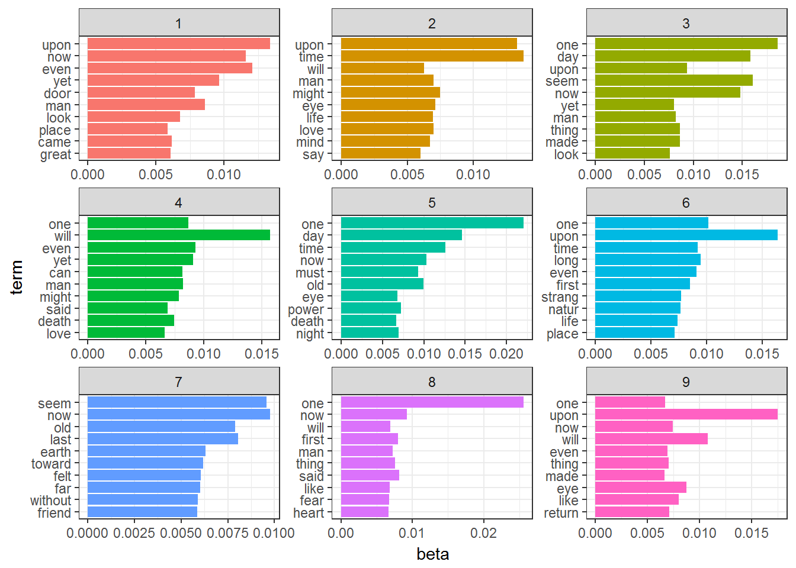

Chapter 19 Document Term Matrix
Document Term Matrix creates a Bag of Words and does the following operations
* make the words lower
remove punctuation
remove
stopwordsof Englishstemthe bag of Words. The tm package provides thestemDocument()function to get to a word’s root
makeDTM <- function(train) {
corpus = Corpus(VectorSource(train$text))
# Pre-process data
corpus <- tm_map(corpus, tolower)
corpus <- tm_map(corpus, removePunctuation)
corpus <- tm_map(corpus, removeWords, stopwords("english"))
corpus <- tm_map(corpus, stemDocument)
dtm = DocumentTermMatrix(corpus)
# Remove sparse terms
dtm = removeSparseTerms(dtm, 0.997)
# Create data frame
labeledTerms = as.data.frame(as.matrix(dtm))
return(labeledTerms)
}Topic modeling is a method for unsupervised classification of documents, similar to clustering on numeric data, which finds natural groups of items even when we’re not sure what we’re looking for.
Latent Dirichlet allocation (LDA) is a particularly popular method for fitting a topic model. It treats each document as a mixture of topics, and each topic as a mixture of words. This allows documents to “overlap” each other in terms of content, rather than being separated into discrete groups, in a way that mirrors typical use of natural language.
labeledTerms4LDA = makeDTM(train)
labeledTerms4LDA = labeledTerms4LDA[rowSums(abs(labeledTerms4LDA)) != 0,]
spooky_lda <- LDA(labeledTerms4LDA, k = 9, control = list(seed = 13))
spooky_lda## A LDA_VEM topic model with 9 topics.#The tidytext package provides this method for extracting the per-topic-per-word probabilities,
# called β (“beta”), from the model
spooky_topics <- tidy(spooky_lda, matrix = "beta")
spooky_top_terms <- spooky_topics %>%
group_by(topic) %>%
top_n(10, beta) %>%
ungroup() %>%
arrange(topic, -beta)
spooky_top_terms %>%
mutate(term = reorder(term, beta)) %>%
ggplot(aes(term, beta, fill = factor(topic))) +
geom_col(show.legend = FALSE) +
facet_wrap(~ topic, scales = "free") +
coord_flip() + theme_bw()
This visualization lets us understand the Nine topics that were extracted from the Words.
Some of the words occur in more than one topic.